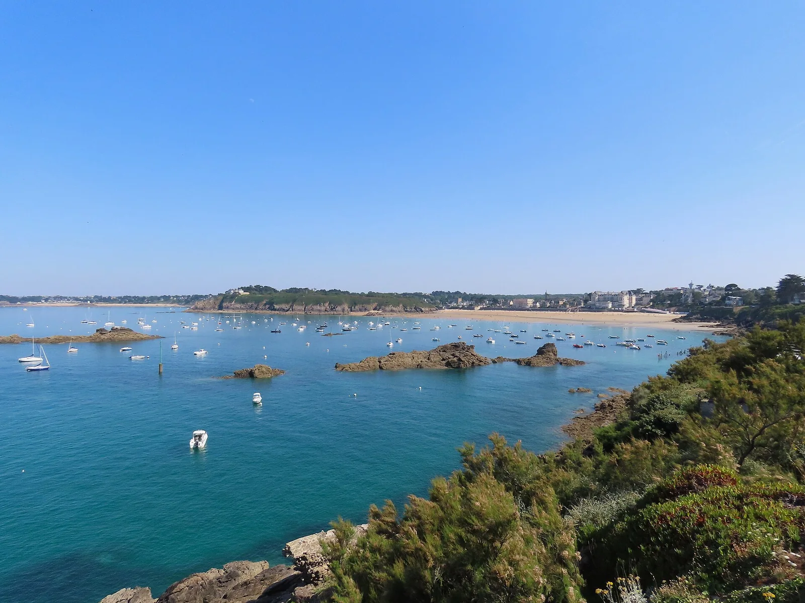

Saint-Lunaire
Ille-et-Vilaine, France · surf, baignade, bodyboard, paddle

Station balnéaire de la Côte d'Émeraude avec une plage exposée qui prend la houle : bon spot d'initiation au surf.
- Lieu
- Ille-et-Vilaine, France
- Niveau
- Débutant
- Activités
- surf, baignade, bodyboard, paddle
- Type d'eau
- Mer / océan
- Coordonnées
- 48.63, -2.11 (position approximative du secteur)
Dangers à connaître
- Rochers en bord de plage à marée basse.
- Courants par fort coefficient.
Le conseil d'Ocean Buddy
Idéal pour débuter le surf à mi-marée montante.
Ouvrir dans Ocean Buddy Télécharger sur l'App Store
Source : Description historique Ocean Buddy · vérification externe en attente.